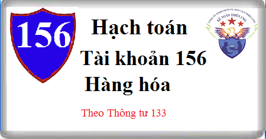

Hướng dẫn cách hạch toán Tài khoản 156 theo thông tư 133, cách hạch toán hàng hóa nhập khẩu, mua nhập kho, bán trả lại, khuyến mãi, cho biếu tặng, tiêu dùng nội bộ, hao hụt, thừa thiếu hàng hóa …
1. Nguyên tắc kế toán Tài khoản 156 - Hàng hóa
a) Tài khoản này dùng để phản ánh trị giá hiện có và tình hình biến động tăng, giảm các loại hàng hóa của doanh nghiệp bao gồm hàng hóa tại các kho hàng, quầy hàng, hàng hóa bất động sản. Hàng hóa là các loại vật tư, sản phẩm do doanh nghiệp mua về với mục đích để bán (bán buôn và bán lẻ). Trường hợp hàng hóa mua về vừa dùng để bán, vừa dùng để sản xuất, kinh doanh không phân biệt rõ ràng giữa hai mục đích bán lại hay để sử dụng thì vẫn phản ánh vào Tài khoản 156 “Hàng hóa”.
- Trong giao dịch xuất nhập khẩu ủy thác, tài khoản này chỉ sử dụng tại bên giao ủy thác, không sử dụng tại bên nhận ủy thác (bên nhận giữ hộ).
b) Những trường hợp sau đây không phản ánh vào Tài khoản 156 “Hàng hóa”:
- Hàng hóa nhận bán hộ, nhận giữ hộ cho các doanh nghiệp khác;
- Nguyên vật liệu, công cụ dụng cụ mua về dùng cho hoạt động sản xuất, kinh doanh (ghi vào các Tài khoản 152 “Nguyên liệu, vật liệu”, hoặc Tài khoản 153 “Công cụ, dụng cụ”);
- Thành phẩm do doanh nghiệp sản xuất ra (ghi vào Tài khoản 155 Thành phẩm).
c) Kế toán nhập, xuất, tồn kho hàng hóa trên Tài khoản 156 được phản ánh theo nguyên tắc giá gốc. Giá gốc hàng hóa mua vào, bao gồm: Giá mua, chi phí thu mua (vận chuyển, bốc xếp, bảo quản hàng từ nơi mua về kho doanh nghiệp, chi phí bảo hiểm,...), thuế nhập khẩu, thuế tiêu thụ đặc biệt, thuế bảo vệ môi trường (nếu có), thuế GTGT hàng nhập khẩu (nếu không được khấu trừ). Trường hợp doanh nghiệp mua hàng hóa về để bán lại nhưng vì lý do nào đó cần phải gia công, sơ chế, tân trang, phân loại chọn lọc để làm tăng thêm giá trị hoặc khả năng bán của hàng hóa thì trị giá hàng mua gồm cả chi phí gia công, sơ chế.
- Giá gốc của hàng hóa mua vào được tính theo từng nguồn nhập.
- Để tính giá trị hàng hóa xuất kho, kế toán có thể áp dụng một trong các phương pháp sau:
+ Phương pháp nhập trước - xuất trước;
+ Phương pháp giá thực tế đích danh;
+ Phương pháp bình quân gia quyền sau mỗi lần nhập hoặc cuối kỳ.
Xem thêm: Cách tính giá nhập kho hàng hóa
- Một số đơn vị có đặc thù (ví dụ như các đơn vị kinh doanh siêu thị hoặc tương tự) có thể áp dụng kỹ thuật xác định giá trị hàng tồn kho cuối kỳ theo phương pháp giá bán lẻ. Theo phương pháp này, giá trị xuất kho của hàng hóa được xác định căn cứ vào giá bán của hàng tồn kho trừ đi lợi nhuận biên (do doanh nghiệp tự xác định) theo tỷ lệ phần trăm hợp lý. Tỷ lệ phần trăm này có tính việc các mặt hàng có thể bị hạ giá xuống thấp hơn giá bán ban đầu. Thông thường mỗi bộ phận bán lẻ sẽ sử dụng một tỷ lệ phần trăm bình quân riêng.
- Chi phí thu mua hàng hóa trong kỳ có thể được hạch toán trực tiếp vào giá gốc hàng tồn kho hoặc được phân bổ cho hàng hóa tiêu thụ trong kỳ và hàng hóa tồn kho cuối kỳ. Việc lựa chọn tiêu thức phân bổ chi phí thu mua hàng hóa tùy thuộc tình hình cụ thể của từng doanh nghiệp nhưng phải thực hiện theo nguyên tắc nhất quán.
d) Trường hợp mua hàng hóa được nhận kèm theo sản phẩm, hàng hóa, phụ tùng thay thế (đề phòng hỏng hóc), kế toán phải xác định và ghi nhận riêng sản phẩm, hàng hóa, phụ tùng thay thế theo giá trị hợp lý. Giá trị hàng hóa nhập kho là giá đã trừ giá trị sản phẩm, hàng hóa, thiết bị, phụ tùng thay thế.
đ) Kế toán chi tiết hàng hóa phải thực hiện theo từng kho, từng loại, từng nhóm hàng hóa.
e) Trường hợp doanh nghiệp là nhà phân phối hoạt động thương mại được nhận hàng hóa (không phải trả tiền) từ nhà sản xuất để quảng cáo, khuyến mại cho khách hàng mua hàng của nhà sản xuất, nhà phân phối
- Khi nhận hàng của nhà sản xuất (không phải trả tiền) dùng để khuyến mại, quảng cáo cho khách hàng, doanh nghiệp phải theo dõi chi tiết số lượng hàng trong hệ thống quản trị nội bộ của mình và thuyết minh trên Bản thuyết minh Báo cáo tài chính đối với hàng nhận được và số hàng đã dùng để khuyến mại cho người mua.
- Khi hết chương trình khuyến mại, nếu không phải trả lại nhà sản xuất số hàng khuyến mại chưa sử dụng hết, kế toán ghi nhận giá trị số hàng khuyến mại không phải trả lại là thu nhập khác.
2. Kết cấu và nội dung Tài khoản 156 - Hàng hóa
Bên Nợ:
- Trị giá mua vào của hàng hóa theo hóa đơn mua hàng (bao gồm các loại thuế không được hoàn lại);
- Chi phí thu mua hàng hóa;
- Trị giá của hàng hóa thuê ngoài gia công (gồm giá mua vào và chi phí gia công);
- Trị giá hàng hóa đã bán bị người mua trả lại;
- Trị giá hàng hóa phát hiện thừa khi kiểm kê;
- Trị giá hàng hóa bất động sản mua vào hoặc chuyển từ bất động sản đầu tư sang;
- Kết chuyển giá trị hàng hóa tồn kho cuối kỳ (trường hợp doanh nghiệp kế toán hàng tồn kho theo phương pháp kiểm kê định kỳ).
Bên Có:
- Trị giá của hàng hóa xuất kho để bán, giao đại lý, giao cho đơn vị hạch toán phụ thuộc; thuê ngoài gia công hoặc sử dụng cho sản xuất, kinh doanh;
- Chi phí thu mua phân bổ cho hàng hóa đã bán trong kỳ;
- Chiết khấu thương mại hàng mua được hưởng;
- Các khoản giảm giá hàng mua được hưởng;
- Trị giá hàng hóa trả lại cho người bán;
- Trị giá hàng hóa phát hiện thiếu khi kiểm kê;
- Trị giá hàng hóa bất động sản đã bán hoặc chuyển thành bất động sản đầu tư, bất động sản chủ sở hữu sử dụng hoặc tài sản cố định;
- Kết chuyển giá trị hàng hóa tồn kho đầu kỳ (trường hợp doanh nghiệp kế toán hàng tồn kho theo phương pháp kiểm kê định kỳ).
Số dư bên Nợ: Giá gốc của hàng hóa tồn kho.
3. Cách hạch toán hàng hóa Tài khoản 156 theo TT 133:
3.1. Trường hợp doanh nghiệp hạch toán hàng hóa tồn kho theo phương pháp kê khai thường xuyên.
3.1.1 Hàng hóa mua ngoài nhập kho doanh nghiệp, căn cứ hóa đơn, phiếu nhập kho và các chứng từ có liên quan:
a) Khi mua hàng hóa, nếu thuế GTGT đầu vào được khấu trừ, ghi:
Nợ TK 156 - Hàng hóa (1561) (chi tiết hàng hóa mua vào và hàng hóa sử dụng như hàng thay thế đề phòng hư hỏng)
Nợ Tài khoản 153 Công cụ dụng cụ (giá trị hợp lý phụ tùng thay thế)
Nợ TK 133 Thuế GTGT được khấu trừ (1331) (thuế GTGT đầu vào)
Có các TK 111, 112, 141, 331,... (tổng giá thanh toán).
- Nếu thuế GTGT đầu vào không được khấu trừ thì trị giá hàng hóa mua vào bao gồm cả thuế GTGT.
b) Khi nhập khẩu hàng hóa:
- Khi nhập khẩu hàng hóa, ghi:
Nợ TK 156 - Hàng hóa
Có Tài khoản 331 Phải trả người bán
Có TK 3331 - Thuế GTGT phải nộp (33312) (nếu thuế GTGT đầu vào của hàng nhập khẩu không được khấu trừ)
Có TK 3332- Thuế tiêu thụ đặc biệt (nếu có)
Có TK 3333 Thuế xuất nhập khẩu (chi tiết thuế nhập khẩu)
Có TK 33381 - Thuế bảo vệ môi trường.
- Nếu thuế GTGT đầu vào của hàng nhập khẩu được khấu trừ, ghi:
Nợ TK 133 - Thuế GTGT được khấu trừ
Có TK 3331 - Thuế GTGT phải nộp (33312).
- Mua hàng dưới hình thức uỷ thác nhập khẩu thực hiện theo quy định ở tài khoản 331 - Phải trả cho người bán.
3.1.2 Trường hợp đã nhận được hóa đơn của người bán nhưng đến cuối kỳ kế toán, hàng hóa chưa về nhập kho thì căn cứ vào hóa đơn, ghi:
Nợ TK 151 - Hàng mua đang đi đường
Nợ TK 133 - Thuế GTGT được khấu trừ (nếu có)
Có các TK 111, 112, 331,...
- Sang kỳ kế toán sau, khi hàng mua đang đi đường về nhập kho, ghi:
Nợ TK 156 - Hàng hóa (1561)
Có TK 151 - Hàng mua đang đi đường.
3.1.3 Trường hợp khoản chiết khấu thương mại hoặc giảm giá hàng bán nhận được (kể cả các khoản tiền phạt vi phạm hợp đồng kinh tế về bản chất làm giảm giá trị bên mua phải thanh toán) sau khi mua hàng thì kế toán phải căn cứ vào tình hình biến động của hàng hóa để phân bổ số chiết khấu thương mại, giảm giá hàng bán được hưởng dựa trên số hàng còn tồn kho, số đã xuất bán trong kỳ:
Nợ các Tài khoản 111, 112, 331,....
Có TK 156 - Hàng hóa (nếu hàng còn tồn kho)
Có TK 632 - Giá vốn hàng bán (nếu đã tiêu thụ trong kỳ)
Có TK 133 - Thuế GTGT được khấu trừ (1331) (nếu có).
3.1.4 Giá trị của hàng hóa mua ngoài không đúng quy cách, phẩm chất theo hợp đồng kinh tế phải trả lại cho người bán, ghi:
Nợ các TK 111, 112,...
Nợ TK 331 - Phải trả cho người bán
Có TK 156 - Hàng hóa
Có TK 133 - Thuế GTGT được khấu trừ (1331) (nếu có).
3.1.5 Phản ánh chi phí thu mua hàng hoá, ghi:
Nợ TK 156 - Hàng hóa
Nợ TK 133 - Thuế GTGT được khấu trừ (nếu có)
Có các TK 111, 112, 141, 331,...
3.1.6. Khi mua hàng hóa theo phương thức trả chậm, trả góp, ghi:
Nợ TK 156 - Hàng hóa (theo giá mua trả tiền ngay)
Nợ TK 133 - Thuế GTGT được khấu trừ (nếu có)
Nợ TK 242 - Chi phí trả trước {phần lãi trả chậm là số chênh lệch giữa tổng số tiền phải thanh toán trừ (-) Giá mua trả tiền ngay trừ thuế GTGT (nếu được khấu trừ)}
Có TK 331 - Phải trả cho người bán (tổng giá thanh toán).
Định kỳ, tính vào chi phí tài chính số lãi mua hàng trả chậm, trả góp phải trả, ghi:
Nợ TK 635 - Chi phí tài chính
Có TK 242 - Chi phí trả trước.
3.1.7. Khi mua hàng hoá bất động sản về để bán, kế toán phản ánh giá mua và các chi phí liên quan trực tiếp đến việc mua hàng hóa BĐS, ghi:
Nợ TK 156 - Hàng hoá (giá mua chưa có thuế GTGT) (chi tiết hàng hóa BĐS)
Nợ TK 133 - Thuế GTGT được khấu trừ
Có các TK 111, 112, 331,...
3.1.8. Trường hợp bất động sản đầu tư chuyển thành hàng tồn kho khi chủ sở hữu có quyết định sửa chữa, cải tạo, nâng cấp để bán:
- Khi có quyết định sửa chữa, cải tạo, nâng cấp bất động sản đầu tư để bán, ghi:
Nợ TK 156 - Hàng hóa (giá trị còn lại của BĐS đầu tư)
Nợ TK 214 Hao mòn TSCĐ ((2147) - Số hao mòn lũy kế)
Có TK 217 Bất động sản đầu tư (nguyên giá).
- Khi phát sinh các chi phí sửa chữa, cải tạo, nâng cấp triển khai cho mục đích bán, ghi:
Nợ TK 154 - Chi phí sản xuất kinh doanh dở dang
Nợ TK 133 - Thuế GTGT được khấu trừ
Có các TK 111, 112, 152, 334, 331,...
- Khi kết thúc giai đoạn sửa chữa, cải tạo, nâng cấp triển khai cho mục đích bán, kết chuyển toàn bộ chi phí ghi tăng giá trị hàng hóa bất động sản, ghi:
Nợ TK 156 - Hàng hóa
Có TK 154 - Chi phí sản xuất, kinh doanh dở dang.
3.1.9. Trị giá hàng hóa xuất bán được xác định là tiêu thụ, ghi:
Nợ TK 632 - Giá vốn hàng bán
Có TK 156 - Hàng hóa
Đồng thời kế toán phản ánh doanh thu bán hàng:
- Nếu tách ngay được các loại thuế gián thu tại thời điểm ghi nhận doanh thu, ghi:
Nợ các TK 111, 112,... (tổng giá thanh toán) hoặc
Nợ Tài khoản 131 Phải thu khách hàng (tổng giá thanh toán)
Có TK 511 - Doanh thu bán hàng và cung cấp dịch vụ
Có TK 333 - Thuế và các khoản phải nộp Nhà nước.
- Nếu không tách ngay được thuế, kế toán ghi nhận doanh thu bao gồm cả thuế. Định kỳ kế toán xác định số thuế phải nộp và ghi giảm doanh thu, ghi:
Nợ TK 511 - Doanh thu bán hàng và cung cấp dịch vụ (tổng giá thanh toán)
Có TK 333 - Thuế và các khoản phải nộp Nhà nước.
3.1.10. Trường hợp thuê ngoài gia công, chế biến hàng hóa:
- Khi xuất kho hàng hóa đưa đi gia công, chế biến, ghi:
Nợ TK 154 - Chi phí sản xuất, kinh doanh dở dang
Có TK 156 - Hàng hóa.
- Chi phí gia công, chế biến hàng hóa, ghi:
Nợ TK 154 - Chi phí sản xuất, kinh doanh dở dang
Nợ TK 133 - Thuế GTGT được khấu trừ (nếu có)
Có các TK 111, 112, 331,...
- Khi gia công xong nhập lại kho hàng hóa, ghi:
Nợ TK 156 - Hàng hóa
Có TK 154 - Chi phí sản xuất, kinh doanh dở dang.
3.1.11. Khi xuất kho hàng hóa gửi cho khách hàng hoặc xuất kho cho các đại lý, doanh nghiệp nhận hàng ký gửi,..., ghi:
Nợ Tài khoản 157 Hàng gửi bán
Có TK 156 - Hàng hóa.
3.1.12. Khi xuất hàng hóa tiêu dùng nội bộ, ghi:
Nợ các TK 642, 241, 211, 154 …
Có TK 156 - Hàng hóa.
3.1.13. Trường hợp doanh nghiệp sử dụng hàng hóa để biếu tặng, khuyến mại, quảng cáo (theo pháp luật về thương mại):
a) Trường hợp xuất hàng hóa để biếu tặng, khuyến mại, quảng cáo không thu tiền, không kèm theo các điều kiện khác như phải mua sản phẩm, hàng hóa...., kế toán ghi nhận giá trị hàng hóa vào chi phí bán hàng (chi tiết hàng khuyến mại, quảng cáo), ghi:
Nợ TK 642 - Chi phí quản lý kinh doanh
Có TK 156 - Hàng hóa (giá vốn).
b) Trường hợp xuất hàng hóa để khuyến mại, quảng cáo nhưng khách hàng chỉ được nhận hàng khuyến mại, quảng cáo kèm theo các điều kiện khác như phải mua sản phẩm, hàng hóa (ví dụ như mua 2 sản phẩm được tặng 1 sản phẩm....) thì kế toán phải phân bổ số tiền thu được để tính doanh thu cho cả hàng khuyến mại, giá trị hàng khuyến mại được tính vào giá vốn hàng bán (trường hợp này bản chất giao dịch là giảm giá hàng bán).
- Khi xuất hàng hóa khuyến mại, kế toán ghi nhận giá trị hàng khuyến mại vào giá vốn hàng bán, ghi:
Nợ TK 632 - Giá vốn hàng bán (giá thành sản xuất)
Có TK 156 - Hàng hóa.
- Ghi nhận doanh thu của hàng khuyến mại trên cơ sở phân bổ số tiền thu được cho cả sản phẩm, hàng hóa được bán và hàng hóa khuyến mại, quảng cáo, ghi:
Nợ các TK 111, 112, 131…
Có TK 511 - Doanh thu bán hàng và cung cấp dịch vụ
Có TK 3331 - Thuế GTGT phải nộp (33311) (nếu có).
c) Nếu hàng hóa biếu tặng cho cán bộ công nhân viên được trang trải bằng quỹ khen thưởng, phúc lợi, kế toán phải ghi nhận doanh thu, giá vốn như giao dịch bán hàng thông thường, ghi:
- Ghi nhận giá vốn hàng bán đối với giá trị hàng hóa dùng để biếu, tặng công nhân viên và người lao động:
Nợ TK 632 - Giá vốn hàng bán
Có TK 156 - Hàng hóa.
- Ghi nhận doanh thu của hàng hóa được trang trải bằng quỹ khen thưởng, phúc lợi, ghi:
Nợ TK 353 Quỹ khen thưởng, phúc lợi (tổng giá thanh toán)
Có TK 511 - Doanh thu bán hàng và cung cấp dịch vụ
Có TK 3331 - Thuế GTGT phải nộp (33311) (nếu có).
d, Khi hết chương trình khuyến mại, nếu không phải trả lại nhà sản xuất số hàng khuyến mại chưa sử dụng hết, ghi:
Nợ TK 156 - Hàng hoá (theo giá trị hợp lý)
Có TK 711 - Thu nhập khác.
3.1.14. Kế toán trả lương cho người lao động bằng hàng hóa
- Kế toán ghi nhận doanh thu, ghi:
Nợ TK 334 Phải trả người lao động(tổng giá thanh toán)
Có TK 511 - Doanh thu bán hàng và cung cấp dịch vụ
Có TK 333 - Thuế và các khoản phải nộp Nhà nước
Có TK 3335 - Thuế thu nhập cá nhân.
- Ghi nhận giá vốn hàng bán đối với giá trị hàng hoá dùng để trả lương cho công nhân viên và người lao động:
Nợ TK 632 - Giá vốn hàng bán
Có TK 156 - Hàng hóa.
3.1.15. Hàng hoá đưa đi góp vốn vào đơn vị khác, ghi:
Nợ Tài khoản 228 Đầu tư góp vốn vào đơn vị khác (theo giá đánh giá lại)
Nợ TK 811 - Chi phí khác (chênh lệch giữa giá đánh giá lại nhỏ hơn giá trị ghi sổ của hàng hoá)
Có TK 156 - Hàng hoá
Có TK 711 - Thu nhập khác (chênh lệch giữa giá đánh giá lại lớn hơn giá trị ghi sổ của hàng hoá).
3.1.16. Cuối kỳ, khi phân bổ chi phí thu mua cho hàng hóa được xác định là bán trong kỳ, ghi:
Nợ TK 632 - Giá vốn hàng bán
Có TK 156 - Hàng hóa.
3.1.17. Mọi trường hợp phát hiện thừa hàng hóa bất kỳ ở khâu nào trong kinh doanh phải lập biên bản và truy tìm nguyên nhân. Kế toán căn cứ vào nguyên nhân đã được xác định để xử lý và hạch toán:
- Nếu do nhầm lẫn, cân, đo, đong, đếm, quên ghi sổ,... thì điều chỉnh lại sổ kế toán.
- Nếu hàng hoá thừa là thuộc quyền sở hữu của doanh nghiệp khác, thì giá trị hàng hoá thừa doanh nghiệp chủ động theo dõi trong hệ thống quản trị và ghi chép thông tin trong phần thuyết minh Báo cáo tài chính.
- Nếu chưa xác định được nguyên nhân phải chờ xử lý, ghi:
Nợ TK 156 - Hàng hóa
Có TK 338 Phải trả phải nộp khác (3381).
- Khi có quyết định của cấp có thẩm quyền về xử lý hàng hoá thừa, ghi:
Nợ TK 338 - Phải trả, phải nộp khác (3381)
Có các tài khoản liên quan.
3.1.18. Mọi trường hợp phát hiện thiếu hụt, mất mát hàng hoá ở bất kỳ khâu nào trong kinh doanh phải lập biên bản và truy tìm nguyên nhân. Kế toán căn cứ vào quyết định xử lý của cấp có thẩm quyền theo từng nguyên nhân gây ra để xử lý và ghi sổ kế toán:
- Phản ánh giá trị hàng hóa thiếu chưa xác định được nguyên nhân, chờ xử lý, ghi:
Nợ Tài khoản 138 Phải thu khác (TK 1381- Tài sản thiếu chờ xử lý)
Có TK 156 - Hàng hoá.
- Khi có quyết định xử lý của cấp có thẩm quyền, ghi:
Nợ các TK 111, 112,... (nếu do cá nhân gây ra phải bồi thường bằng tiền)
Nợ TK 334 - Phải trả người lao động (do cá nhân gây ra phải trừ vào lương)
Nợ TK 138 - Phải thu khác (1388) (phải thu bồi thường của người phạm lỗi)
Nợ TK 632 - Giá vốn hàng bán (phần giá trị hao hụt, mất mát còn lại)
Có TK 138 - Phải thu khác (1381).
3.1.19. Trị giá hàng hóa bất động sản được xác định là bán trong kỳ, căn cứ Hóa đơn GTGT hoặc Hóa đơn bán hàng, biên bản bàn giao hàng hóa BĐS, ghi:
Nợ TK 632 - Giá vốn hàng bán
Có TK 156 - Hàng hóa.
Đồng thời kế toán phản ánh doanh thu bán hàng hóa BĐS:
Nợ các TK 111, 112, 131,...
Có TK 511 - Doanh thu bán hàng và cung cấp dịch vụ (5117)
Có TK 3331 - Thuế GTGT phải nộp (33311) (nếu có).
3.1.21. Phản ánh giá vốn hàng hóa ứ đọng không cần dùng khi nhượng bán, thanh lý, ghi:
Nợ TK 632 - Giá vốn hàng bán
Có TK 156 - Hàng hóa.
3.2. Trường hợp doanh nghiệp hạch toán hàng tồn kho theo phương pháp kiểm kê định kỳ.
a) Đầu kỳ, kế toán căn cứ giá trị hàng hoá đã kết chuyển cuối kỳ trước kết chuyển trị giá hàng hóa tồn kho đầu kỳ, ghi:
Nợ TK 611 - Mua hàng
Có TK 156 - Hàng hóa.
b) Cuối kỳ kế toán:
- Tiến hành kiểm kê xác định số lượng và giá trị hàng hóa tồn kho cuối kỳ. Căn cứ vào tổng trị giá hàng hóa tồn kho cuối kỳ, ghi:
Nợ TK 156 - Hàng hóa
Có TK 611 - Mua hàng.
- Căn cứ vào kết quả xác định tổng trị giá hàng hóa đã xuất bán, ghi:
Nợ TK 632 - Giá vốn hàng bán
Có TK 611 - Mua hàng.
------------------------------------
Kế toán Diệu Tâm xin chúc bạn thành công. Bạn muốn học cách hoàn thiện sổ sách - Lập báo cáo tài tính, tính thuế - Quyết toán thuế thực tế chuyên sâu, có thể tham gia: Lớp học kế toán thực hành.
